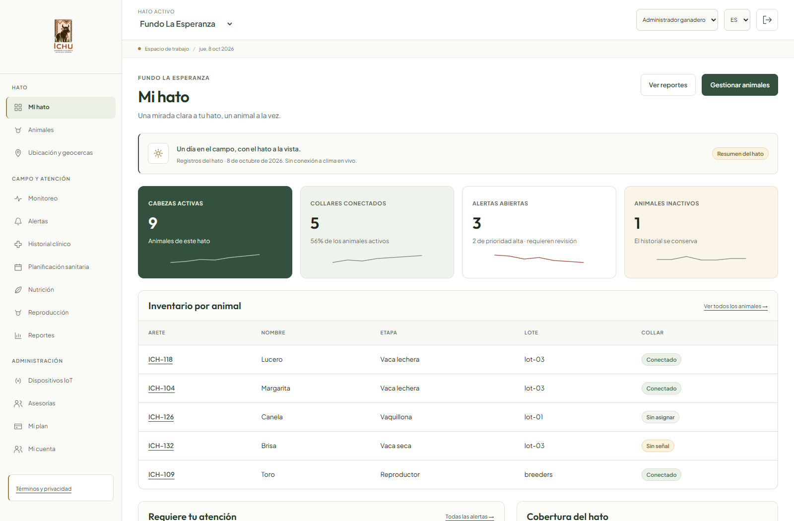
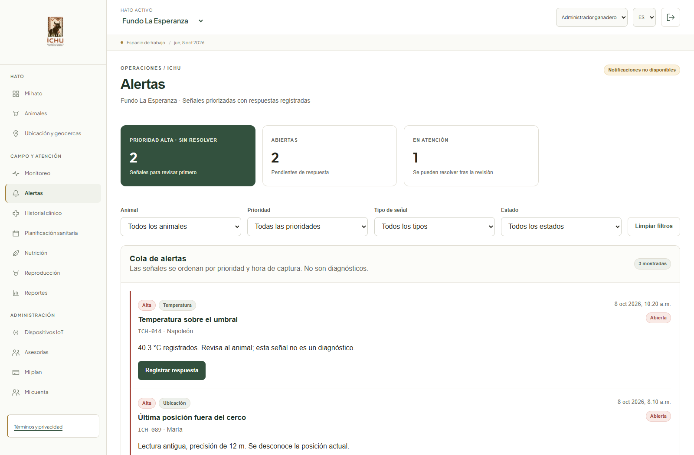
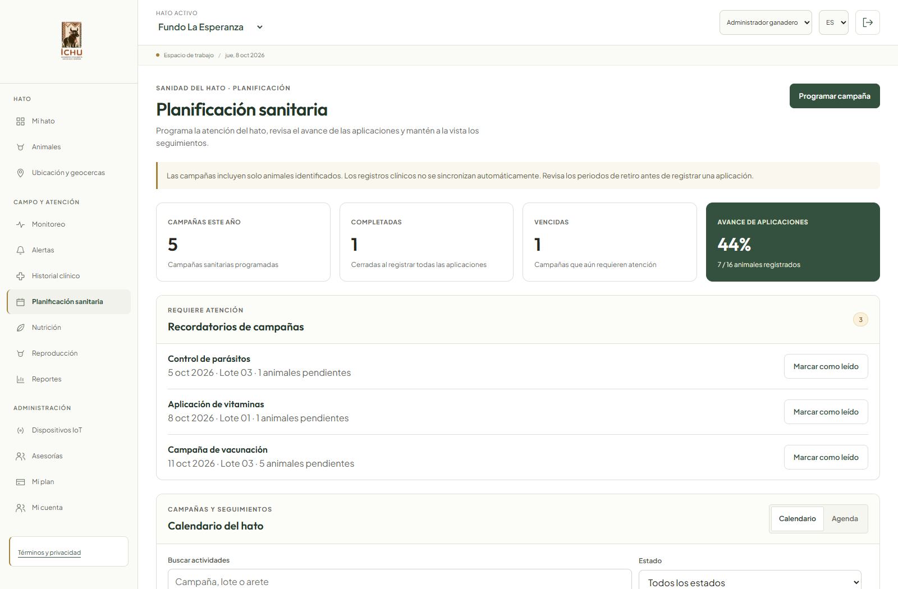
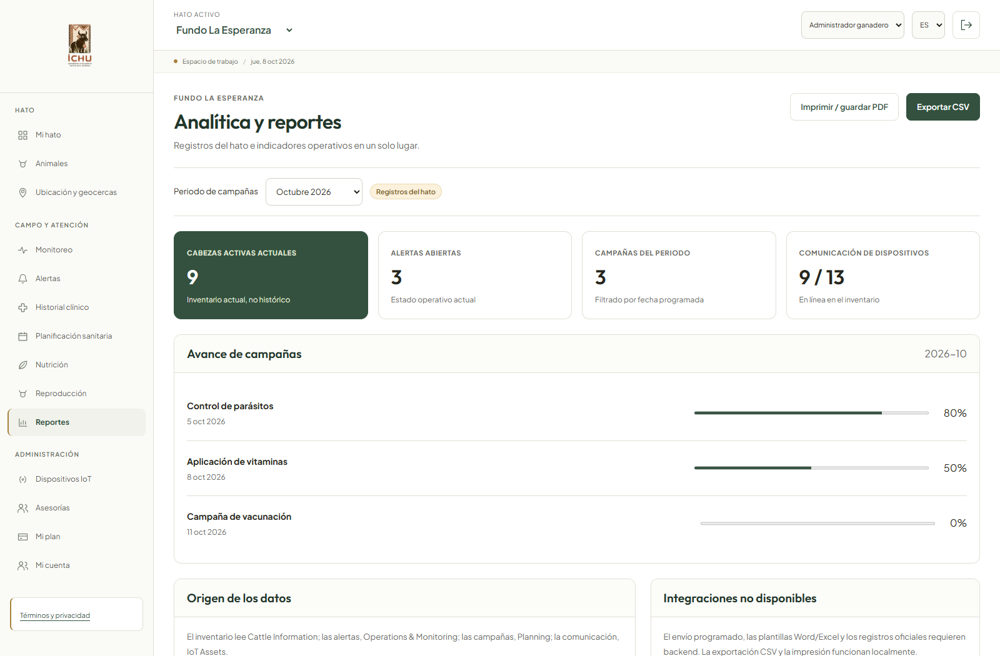
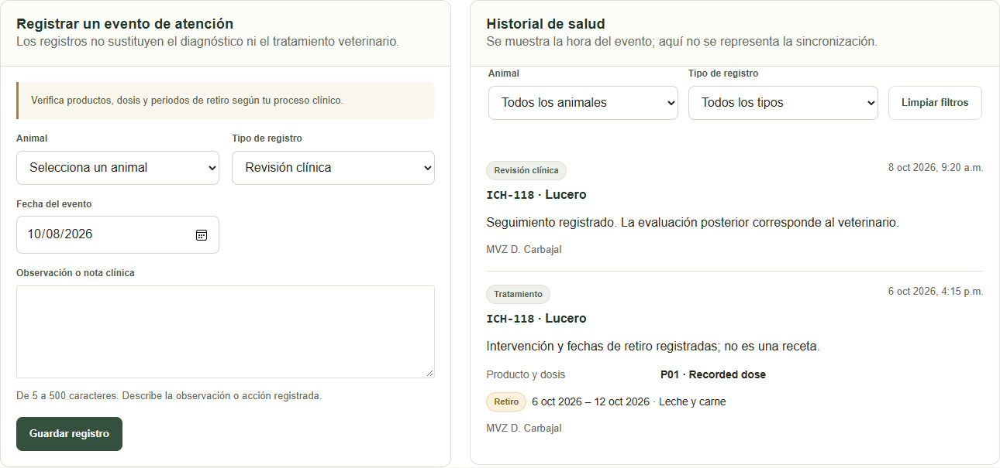

Acceso
Autenticaciónapp.ichu.pe / acceso
ICHU · SMARTFARM
5.4.1 · Exploración estructural
Vistas de escritorio para las tareas del administrador ganadero y del médico veterinario.
Baja fidelidad · distribución de contenido para escritorio · sin aplicación móvil nativa.
5.4.2 · Secuencia de interacción
Acciones principales y respuestas de la interfaz en los recorridos priorizados para la aplicación web.
Cada recorrido corresponde a una meta y a las historias de usuario del alcance web indicadas en 5.4.2.
5.4.3 · Aplicación visual
Capturas reales de la interfaz implementada, con roles, datos de muestra y componentes actuales de ICHU.




Vista vinculada al hato autorizado, con formulario de atención e historial en una sola página.

Las vistas se capturaron desde el frontend local. La figura muestra la Web Application; no representa una aplicación móvil nativa.
5.4.4 · Decisiones y resultados
Rutas esperadas, controles de acceso y recuperación ante validaciones o ausencia de datos.
Los recorridos describen la interfaz web y no implican servicios de backend, notificaciones reales ni acceso a un hato no autorizado.